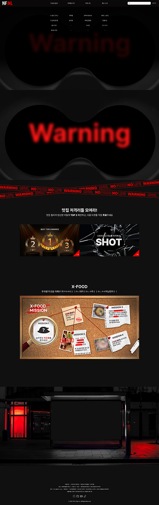
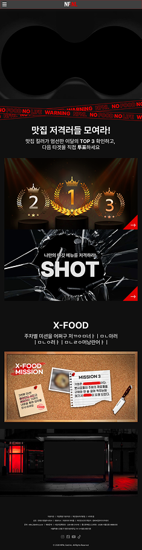
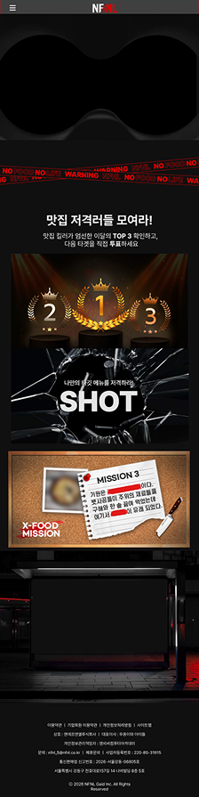
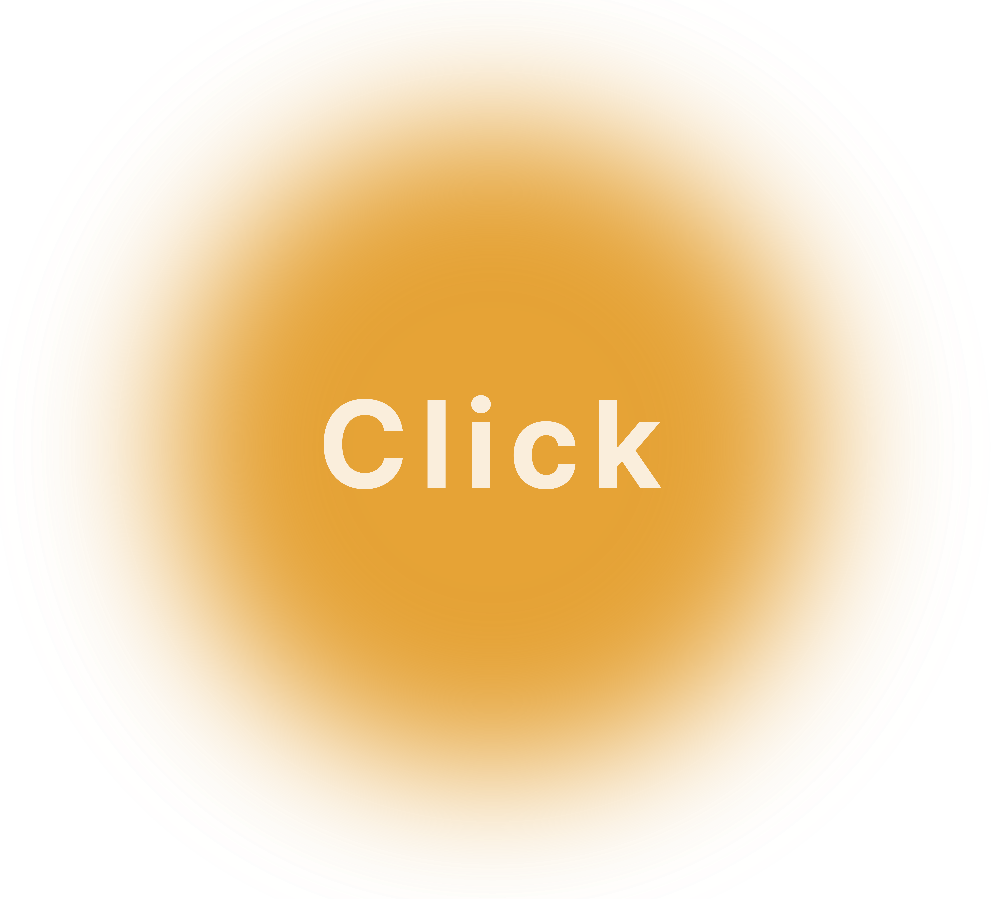

기획부터 디자인, 퍼블리싱까지 함께 진행한 팀 프로젝트
과장된 광고와 정보성 콘텐츠 사이에서 실제 사용자에게 도움이 되는 맛집 정보를 전달하고자 기획한 웹사이트 프로젝트. 신뢰도 높은 정보 전달과 직관적인 사용자 경험을 목표로 기획부터 디자인, 사이트 제작까지 팀 프로젝트로 진행
웹디자인, 웹퍼블리싱
3주
Ai, Ps, Pr, HTML, CSS, JS
팀원들과 함께 기획부터 디자인, 퍼블리싱까지 하나의 프로젝트를 완성해가는 과정 속에서 협업과 커뮤니케이션의 중요성을 깊게 경험할 수 있었던 작업. 여러 사람의 아이디어와 방향성을 조율하며 하나의 결과물로 완성해가는 과정 속에서 역할 분담과 소통 방식의 중요성을 배우게 되었음. 또한 디자인과 퍼블리싱 작업을 함께 진행하며 사용자 경험과 정보 구조를 고려한 웹사이트 제작 과정에 대한 이해를 넓힐 수 있었고, 실제 서비스를 제작한다는 과정에서 기획 의도와 사용자 관점 사이의 균형에 대해서도 고민해볼 수 있었던 프로젝트.



사용자 경험을 고려한 반응형 웹 디자인으로 다양한 디바이스 환경에서도 최적회된 경험을 제공합니다.
PC
1920px
TABLET
768px
MOBILE
376px
스크롤 애니메이션과 동적인 연출을 활용한 웹사이트 프로젝트
다양한 이펙트와 애니메이션 효과에 대한 경험을 쌓기 위해 제작한 웹사이트. 스크롤 애니메이션과 움직임 중심의 연출을 활용해 사이트의 분위기와 사용자 경험을 더욱 다양하게 표현하는 방향으로 제작함.
웹디자인, 웹퍼블리싱
3일
HTML, CSS, GSAP
GSAP를 비롯한 다양한 인터랙션 효과를 직접 구현하며 애니메이션 흐름과 기능에 대한 이해를 넓힐 수 있었던 작업. 스크롤 기반 연출과 움직임 요소를 반복적으로 적용해보며, 사이트 분위기에 맞는 이펙트 활용 방식과 자연스러운 인터랙션 구성에 대해 경험할 수 있었음. 또한 단순한 시각 효과를 넘어 움직임이 콘텐츠의 몰입감과 흐름에 영향을 준다는 점을 배우게 되었고, 다양한 프로젝트에도 응용할 수 있는 계기가 되었음.
반응형 구조와 시각적 구성을 중심으로 진행한 웹사이트 리빌드 프로젝트
Delta Air Lines 웹사이트 리빌드를 통해 정보 전달 중심의 구조와 브랜드 아이덴티티를 함께 표현하는 방식을 학습하기 위해 진행. 복잡한 콘텐츠 구조 속에서도 가독성과 시각적 흐름을 유지하는 방향으로 제작
클론 코딩
7일
HTML, CSS, SWIPER, RESPONSIVE
항공사 특유의 브랜드 아이덴티티와 많은 양의 정보를 함께 다루며, 정보 전달과 시각적 디자인의 균형에 대해 고민해볼 수 있었던 작업. 컨텐츠와 레이아웃을 정리하는 과정 속에서 복잡한 정보보다 직관적이고 깔끔하게 전달할 수 있는 방법에 대해 배우게 되었으며, 브랜드의 분위기를 유지하면서 사용자 경험까지 고려하는 웹 구성 방식에 대한 이해를 넓힐 수 있었음.
반응형 구조와 시각적 구성을 중심으로 진행한 웹사이트 리빌드 프로젝트
실제 영화 사이트를 기반으로 시각적 분위기와 사용자 흐름을 구현하기위해 진행한 웹사이트 리빌드 프로젝트
클론 코딩
7일
HTML, CSS, SWIPER, RESPONSIVE
상영 영화 콘텐츠가 자연스럽게 전환되는 스와이퍼 기능 구현에 집중하며 제작했던 작업. 반복적인 과정을 통해 스와이퍼 기능과 사용자 경험 흐름에 대한 이해를 높일 수 있었고, 해당 기술을 다양한 레이아웃과 컨텐츠 구성에도 응용할 수 있는 계기가 되었음.
